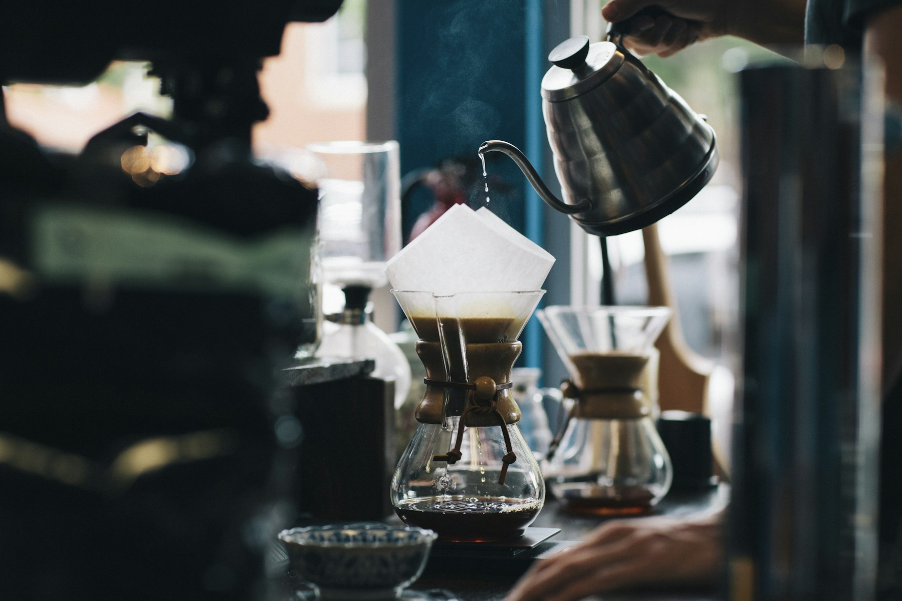
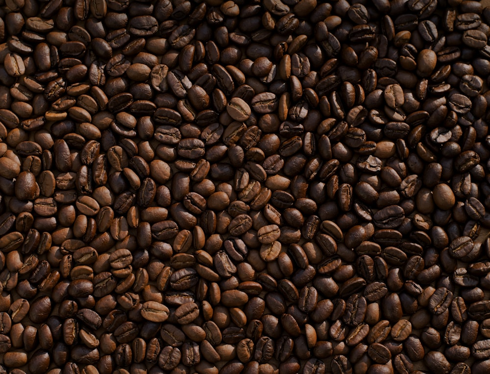

GU TRUYỀN THỐNGROBUSTA / RANG ĐẬM
Đậm Đà
01Mạnh mẽ, hậu vị chocolate đắng.
Hợp một ly phin, thêm chút sữa đặc.

Cà phê ngon
là cà phê khiến
bạn muốn
ngồi lại.
Đậm một chút, dịu một chút — ngon theo cách của bạn.
Mạnh mẽ, hậu vị chocolate đắng.
Hợp một ly phin, thêm chút sữa đặc.
Thanh nhẹ, hương trái cây chín.
Dành cho buổi sáng không vội vàng.
Đủ đậm, đủ thơm, chút ngọt bùi.
Một người bạn cho mọi ngày trong tuần.

Nếp bắt đầu từ một điều rất quen: tiếng giọt cà phê rơi vào buổi sáng, mùi rang thơm đầu ngõ, và câu “uống cà phê không?” trước mỗi cuộc gặp.
Chúng tôi muốn giữ lại cảm giác ấy. Chọn hạt cẩn thận, rang vừa tới và để vị ngon tự kể câu chuyện của mình. Không cầu kỳ. Chỉ cần tử tế.
Một chiếc phin. Vài phút thảnh thơi.
Và một ly cà phê đúng ý.
Tráng phin bằng nước nóng. Cho khoảng 20g cà phê vào và lắc nhẹ để bột nằm đều.
Rót 30ml nước nóng khoảng 92–96°C để ủ trong 30 giây. Hương thơm bắt đầu mở ra.
Thêm khoảng 70ml nước, đậy nắp và chờ 4–5 phút. Thêm sữa hay đá, tùy gu của bạn.
Nếp mách nhỏ: thử thay đổi độ xay và lượng nước để tìm vị vừa vặn nhất với mình.